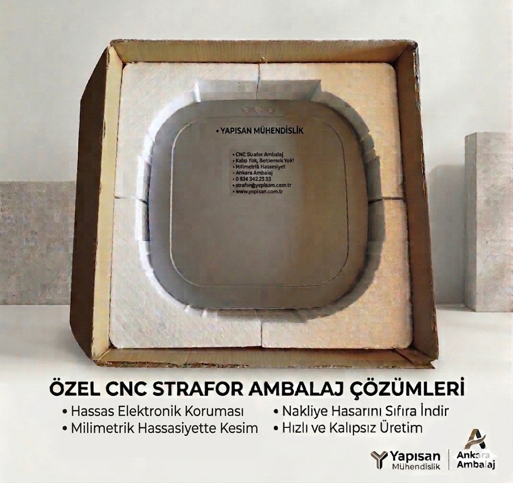

Ankara Ambalaj (Yapısan Mühendislik) olarak, ürünlerinizin güvenliğini tesadüfe bırakmıyoruz. CNC teknolojimiz sayesinde, kalıp maliyeti çıkarmadan ürününüze tam uyumlu koruma kalkanları üretiyoruz.

Uygulama Örneği: Hassas elektronik ve sanayi ürünleri için milimetrik CNC kesim.
"Ürünlerinizi sarıp sarmalamak veya koli içindeki boşlukları doldurmak için en ekonomik ve pratik çözüm!"
Neden Bizim Çözümlerimizi Seçmelisiniz?
💰 En Ekonomik Dolgu Malzemesi
Özel kalıp veya pahalı CNC işçiliği gerektirmediği için maliyeti en düşük koruma yöntemidir. Bütçe dostu bir alternatiftir.
🛡️ Çizilmelere Karşı Tam Kalkan
Mobilya, cam veya beyaz eşya gibi çizilmeye müsait ürünlerin arasına konularak sürtünmeyi ve yüzey hasarlarını tamamen engeller.
📦 Koli İçi Sabitleme
Ürünlerin kutu içinde sallanmasını, devrilmesini önlemek için alt/üst kapak veya ara bölme olarak mükemmel uyum sağlar.
🌊 Darbe ve Isı Yalıtımı
Nakliye sırasındaki sarsıntıları emer, darbeleri dışarıda tutar. Aynı zamanda ısıya duyarlı ürünler için doğal bir yalıtım sağlar.